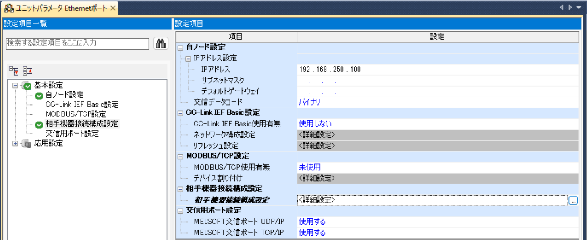
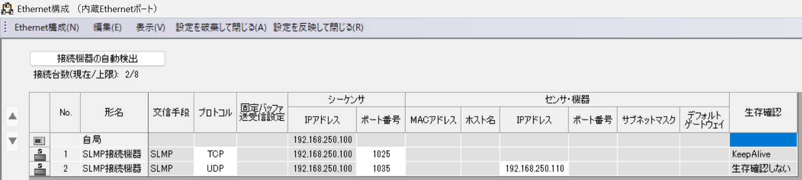

MELSEC / iQ-F
MELSEC iQ-F 接続設定例
MELSEC iQ-F を PLC IO Checker から SLMP で接続する場合の PLC 側設定例です。ユニットパラメータと相手機器接続設定を確認します。
設定例の前提
IPアドレス、サブネットマスク、デフォルトゲートウェイは現場ネットワークに合わせて設定してください。以下は PLC IO Checker から SLMP で接続する場合の設定例です。
説明の都合上、IP: 192.168.250.100、Port(TCP): 1025、Port(UDP): 1035 に統一しております。この設定に必ずしもする必要はありません。
PLC 側設定画面


ユニットパラメータ
IPアドレス
192.168.250.100（例）サブネットマスク
要設定
デフォルトゲートウェイ
要設定
交信データコード
バイナリ
相手機器接続設定
SLMP接続機器（TCP）
交信手段
SLMP
プロトコル
TCP
ポート番号
1025生存確認
KeepAlive
SLMP接続機器（UDP）
交信手段
SLMP
プロトコル
UDP
ポート番号
1035IPアドレス
スマートフォンのIPアドレス
生存確認
しない
※UDPの場合はスマートフォンのIPアドレスの指定が必要になります。
アプリ側で選ぶ項目
通信設定
PLC 種別
MELSEC実機
PLC IP
192.168.250.100（例）ポート
1025（TCP） / 1035（UDP）機種
iQ-F通信
TCP / UDP
リモートパスワード
パスワード有の場合のみ入力
ルーティング
ネットワーク
0局番
255ユニットI/O
0x03FFマルチドロップ
0x00※上記ルーティングは自局指定（デフォルト）です。必要に応じて設定してください。